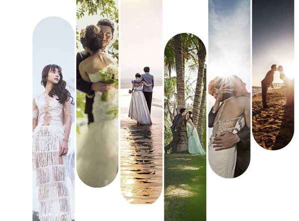

关于我们

关于菲林
从创立遇见菲林以来，打破了原本对于婚照的字面理解，我们专注于倾听，还原爱情的画面，用一次次的快门声就像幸福在敲门，拍摄更像一场爱的旅程，这也是之所以遇见菲林一直专注于如何更了解客户，给的再多不如懂你。 言语表达的美好，文字写下的片刻，还差一个镜头还原的画面，把一切的值得纪念的瞬间，菲林想为你们画下休止符。被时光雕刻过的镜头，才是遇见菲林一直追寻的美丽。
选择菲林的六大理由
01
遇见菲林，品牌起源
三亚遇见菲林婚纱摄影有限公司：我们一直追寻“遥远的相似性”，来找到找到我们对于之间的“相似性”并运用贯彻整个服务过程中来，打造你的专属拍摄体验
02
遇见菲林，品牌精神
从创立遇见菲林以来，打破了原本对于婚照的字面理解，我们专注于倾听，还原爱情的画面，用一次次的快门声就像幸福在敲门，拍摄更像一场爱的旅程。
03
遇见菲林，品牌实力
全球旅拍高端定制旅拍摄影品牌，致力于为80、90后提供专业的婚照服务。天生的完美主义者团队秉持寻找“相似性”的摄影理念，在倾听和了解更多新人的想法。
04
遇见菲林，品牌可鉴
从创立遇见菲林以来，打破了原本对于婚照的字面理解，我们专注于倾听，还原爱情的画面，用一次次的快门声就像幸福在敲门，拍摄更像一场爱的旅程。
05
遇见菲林，品牌文化
我们需要你们的想法和情感的呈现，来找到找到我们对于之间的“相似性”并运用贯彻整个服务过程中来，打造你的专属拍摄体验。
06
遇见菲林，品牌运营
言语表达的美好，文字写下的片刻，还差一个镜头还原的画面，把一切的值得纪念的瞬间，菲林想为你们画下休止符。被时光雕刻过的镜头，才是遇见菲林一直追寻的美丽。